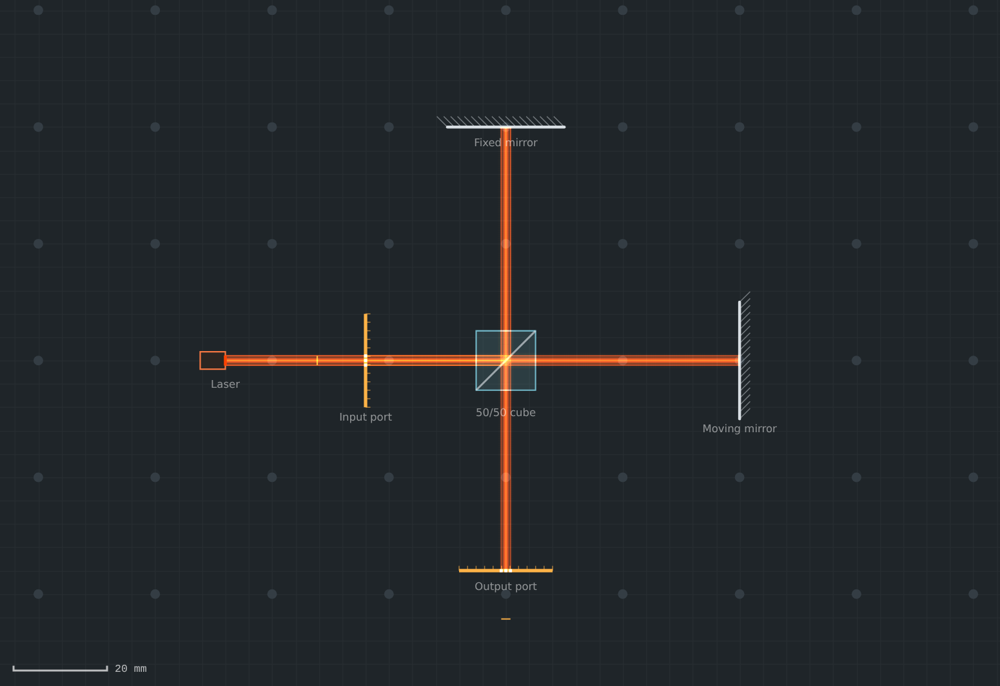
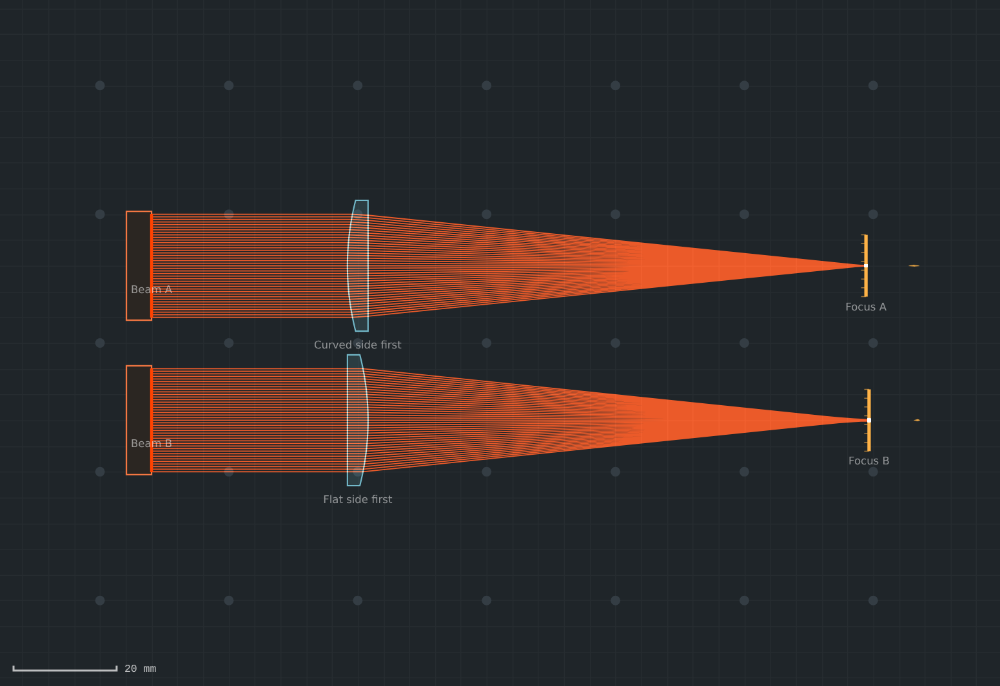
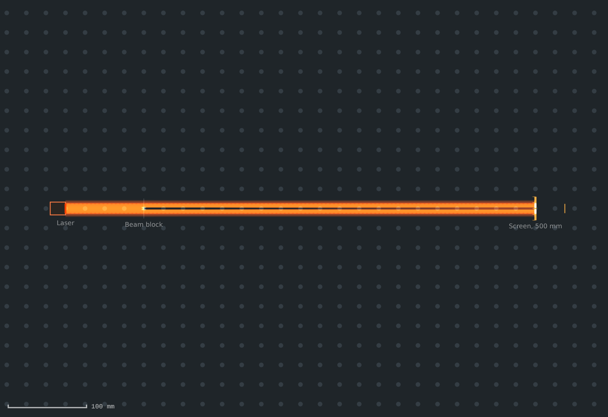
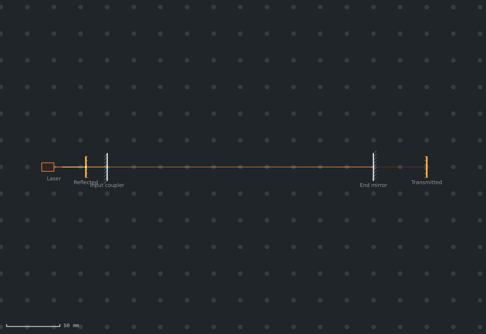
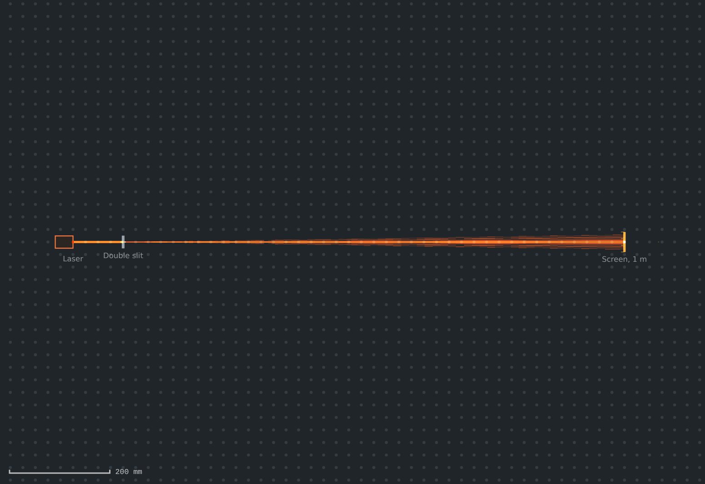
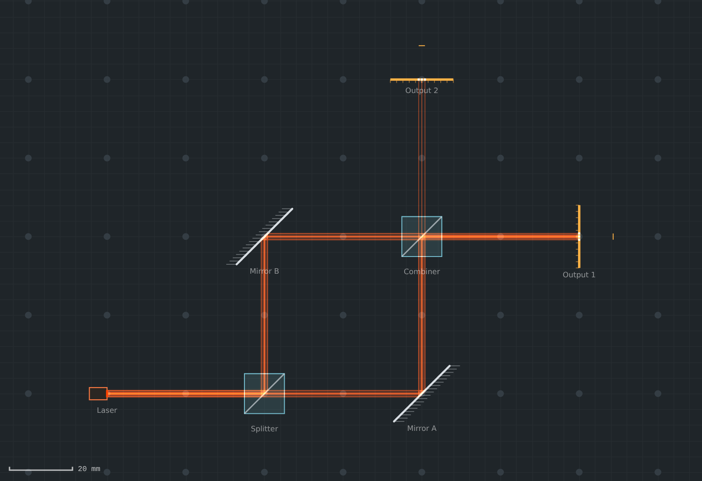
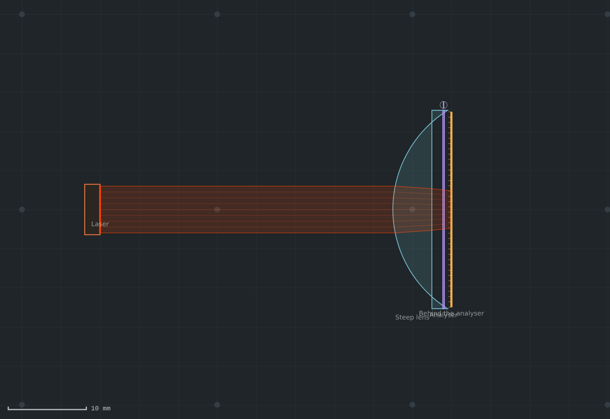
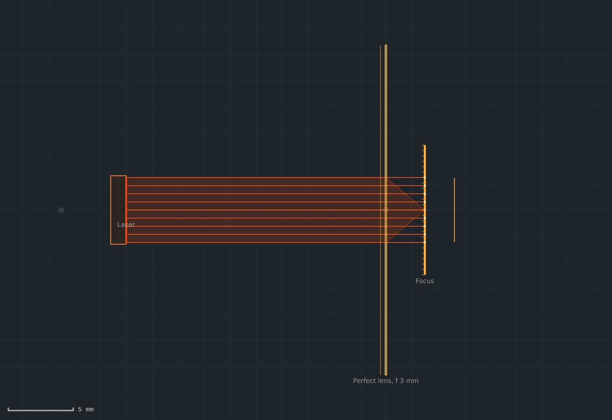
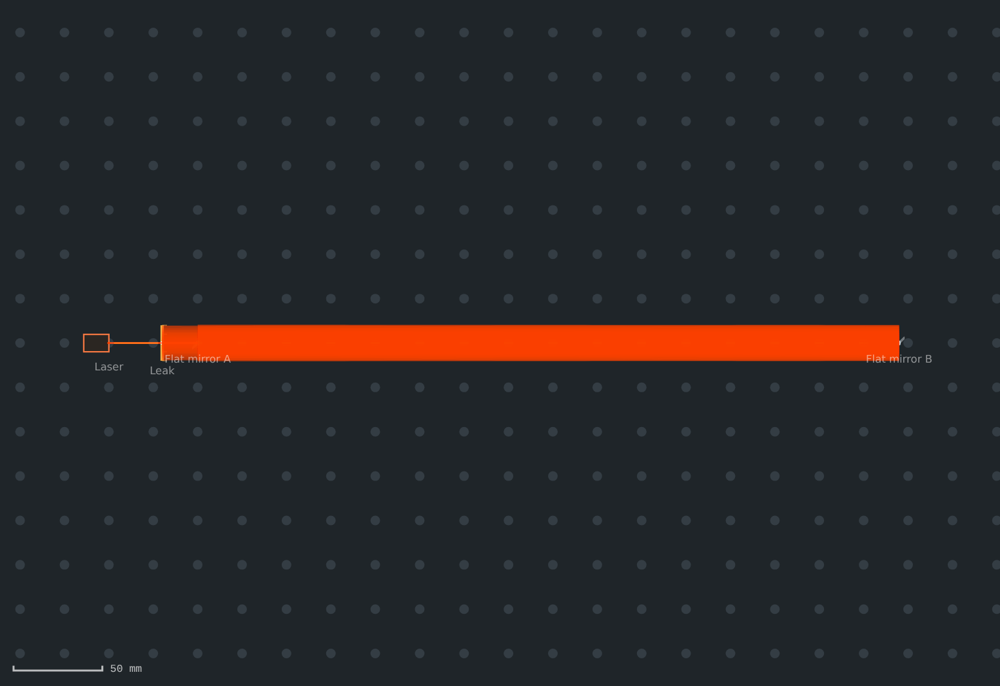

JEKray2D Optical Bench Simulator
Lay out an optical system, trace it, and see the waves as well as the rays.
Free. Runs in your browser.
- Nothing to install and no account. Your bench is saved in your browser as you work
- Lenses, aspheres, mirrors, beam splitters, prisms, waveplates, polarisers, stops and masks
- Import Thorlabs parts straight from their Zemax (.zmx) files
- Save and share benches as
.jekrayfiles, and export the layout as a PNG
Description
JEKray2D is an optical bench simulator that runs in the browser. You place sources, lenses, mirrors and other parts on a virtual breadboard, drag them into position, and the light is traced through them as you move them. You see the result straight away: where the beam goes, where it focuses, what arrives on each screen, and how much power reaches it.
It does more than a basic ray tracer. Each ray carries its polarisation and its optical path, so interferometers show fringes and cavities resonate. A Gaussian beam is followed through every branch of the system. The diffracted field is propagated surface by surface in the same way as physical optics propagation in Zemax, so slits, stops and tight focuses behave as they do on a real bench.
Build a bench in minutes
Add parts from the toolbar and drag or rotate them into place on a 25 mm breadboard grid. Click any part to open its settings: radii, conic and aspheric terms, glass, coatings, reflectivity, wavelength, beam size and more.
Any setting can be swept: set a range and press play to watch the system change as a mirror moves or a lens tilts. The same ranges feed a one-value optimiser and a Monte Carlo tolerance study.

Exact rays through real glass
Rays are traced exactly through spherical, conic and aspheric surfaces, with the refractive index of real glasses (N-BK7, S-LAH64 and others) at each wavelength. Reflection, refraction, total internal reflection, Fresnel losses and thin-film coatings are all included.
Each screen reports spot size, wavefront error, point spread, Strehl ratio, MTF and enclosed energy. In this example you can see why a plano-convex lens should face its curved side to the collimated beam.

Waves, not just rays
The field of each beam is propagated through the system, and every surface acts on it with the phase found by the ray trace. Slits, irises, knife edges, beam blocks and masks, whose amplitude and delay you write as a formula, act on the field as well as on the rays.
Branches of the same beam add as fields wherever they meet, so double slits, interferometers and standing waves come out as they should. Zoom in below 50 µm to see the field computed on every pixel.

Cavities and polarisation
When light loops back on itself, JEKray2D finds the cavity for you and reports its free spectral range, finesse, linewidth, stability, Gaussian mode and losses. It also solves the steady-state field and the cavity’s own modes, in the same way as the Fox–Li method.
Polarisation is tracked as complex s and p amplitudes through every mirror, coating, waveplate and polariser. For steep focusing it switches to a full vector calculation of the focal field.
Examples
Each example opens in the editor, ready to explore. Click any part to see its settings and results.

Young’s double slit
A laser through a double slit onto a screen 1 m away. The fringes come from the diffracted field.
Open in JEKray2D →Poisson’s spot
A bright spot at the centre of a round beam block’s shadow.
Open in JEKray2D →Michelson interferometer
A 50/50 cube with one fixed and one moving mirror. Sweep the moving mirror to see the output port go light and dark.
Open in JEKray2D →
Mach–Zehnder interferometer
Two arms recombined at a second cube, sharing the power between two outputs.
Open in JEKray2D →Plano-convex: which way round?
The same lens facing each way. Compare the spherical aberration at the two foci.
Open in JEKray2D →
Maltese cross
A steeply focusing lens between crossed polarisers. Fresnel coefficients leave a four-leaf pattern.
Open in JEKray2D →
Tight focus, vector
A perfect lens with a 3 mm focal length. At this numerical aperture the focal field is computed as a vector.
Open in JEKray2D →Fabry–Perot cavity
Two mirrors with screens on the reflected and transmitted light. Shows finesse, linewidth and the resonance scan.
Open in JEKray2D →
Fox–Li resonator
Two flat mirrors whose edges shape the modes. The classic Fox and Li calculation, done by the solver.
Open in JEKray2D →Technical Information
JEKray2D works in the plane of the bench. It has no skew rays, no out-of-plane tilts and no anamorphic systems, and it does not model scatter, thermal effects or coating dispersion. Power figures ignore absorption unless you set it on a material.
For anything that gets built, funded or published, check the numbers in an established optical design package first.